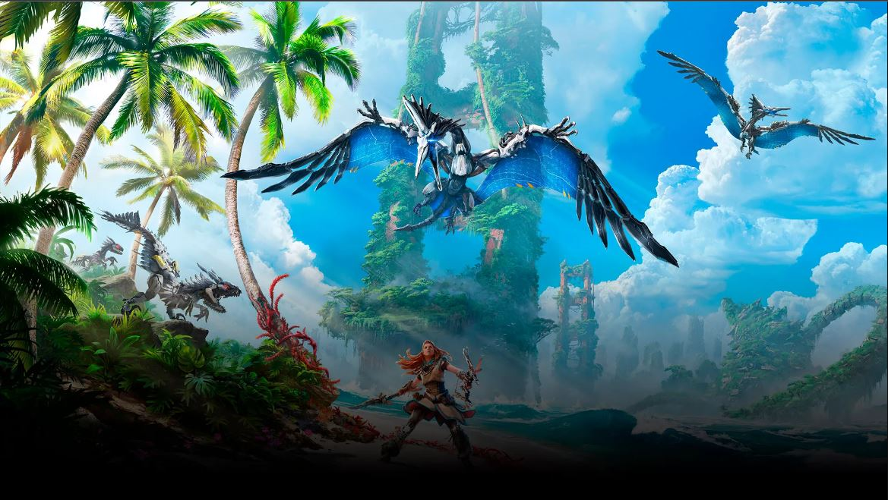
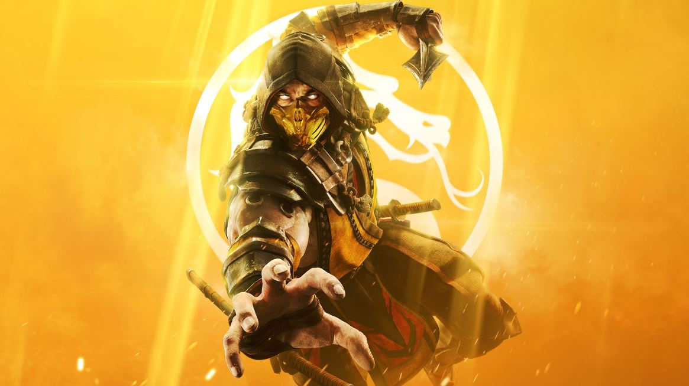

Chorizon Zero Diet
La tierra se muere. Las rugientes tormentas y una desolación imparable causan estragos entre lo que queda de la humanidad, unas cuantas tribus dispersas, mientras nuevas y temibles máquinas merodean por sus fronteras.
La vida en la Tierra se enfrenta a una nueva extinción y nadie sabe por qué.

Mortal Kombat 11
En la lucha por salvar toda la existencia, las amistades se ponen a prueba y se forjan nuevas alianzas. MK11 Ultimate presenta la lista completa de 37 personajes, incluidas las nuevas incorporaciones: Rain, Mileena y Rambo. Mortal Kombat 11 muestra las amistades divertidas,
las muertes sangrientas y los golpes fatales como nunca antes.